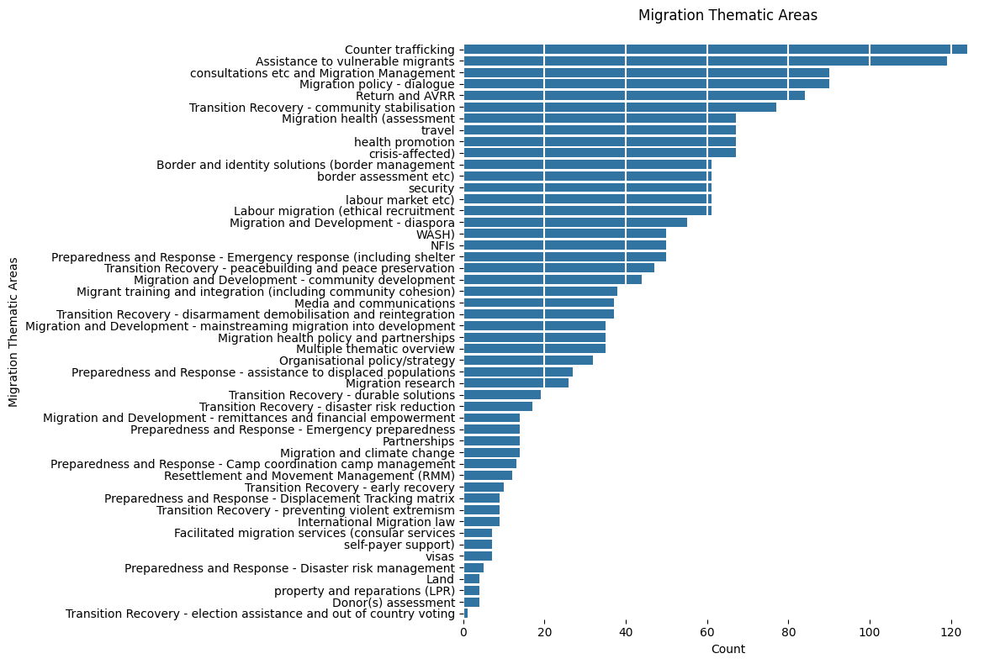
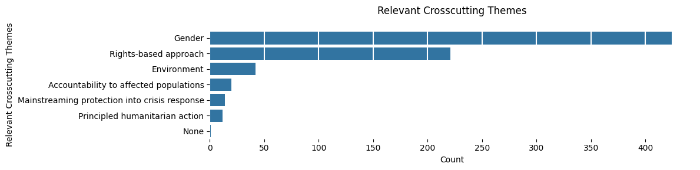
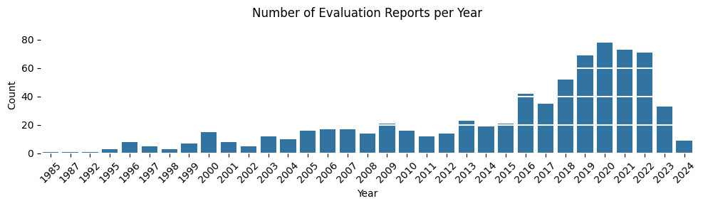
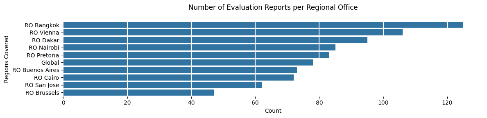
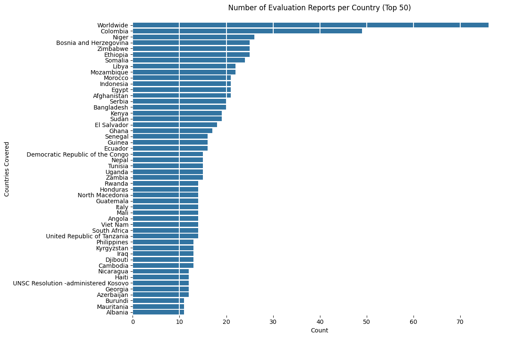

import pandas as pd
from evaluatr.readers import load_evals
from pathlib import Path
from fastcore.all import *
from rich import print
from matplotlib import pyplot as plt
import seaborn as snsEvaluation reports EDA
IOM Reports Exploratory Data Analysis
Imports
Configs
path = Path("../../_data/output/evaluations.json")load_evals(path).filter(lambda x: "ex-post" in x['meta']['Title'].lower())(#67) [{'id': '1a57974ab89d7280988aa6b706147ce1', 'docs': [{'Document Subtype': 'Evaluation report', 'File URL': 'https://evaluation.iom.int/sites/g/files/tmzbdl151/files/docs/resources/Internal%20Evaluation_NG20P0516_MAY_2023_FINAL_Abderrahim%20EL%20MOULAT.pdf', 'File description': 'Evaluation Report'}, {'Document Subtype': 'Evaluation brief', 'File URL': 'https://evaluation.iom.int/sites/g/files/tmzbdl151/files/docs/resources/RR0163_Evaluation%20Brief_MAY_%202023_Abderrahim%20EL%20MOULAT.pdf', 'File description': 'Evaluation Brief'}], 'meta': {'Title': 'EX-POST EVALUATION OF THE PROJECT: NIGERIA: STRENGTHENING REINTEGRATION FOR RETURNEES (SRARP) - PHASE II', 'Year': 2023, 'Author': 'Abderrahim El Moulat', 'Best Practicesor Lessons Learnt': 'Yes', 'Date of Publication': '2023-05-10', 'Donor': 'Government of Germany', 'Evaluation Brief': 'Yes', 'Evaluation Commissioner': 'Donor, IOM', 'Evaluation Coverage': 'Country', 'Evaluation Period From Date': 'nan', 'Evaluation Period To Date': 'NaT', 'Executive Summary': 'Yes', 'External Version of the Report': 'No', 'Languages': 'English', 'Migration Thematic Areas': 'Assistance to vulnerable migrants, Migrant training and integration (including community cohesion), Migration health (assessment, travel, health promotion, crisis-affected), Return and AVRR', 'Name of Project(s) Being Evaluated': nan, 'Number of Pages Excluding annexes': nan, 'Other Documents Included': nan, 'Project Code': 'RR.0163', 'Countries Covered': ['Nigeria'], 'Regions Covered': 'RO Dakar', 'Relevant Crosscutting Themes': 'Gender, Rights-based approach', 'Report Published': 'Yes', 'Terms of Reference': 'No', 'Type of Evaluation Scope': 'Programme/Project', 'Type of Evaluation Timing': 'Ex-post (after the end of the project/programme)', 'Type of Evaluator': 'Internal', 'Level of Evaluation': 'Decentralized', 'Document Subtype': 'Evaluation report, Evaluation brief', 'File URL': 'https://evaluation.iom.int/sites/g/files/tmzbdl151/files/docs/resources/Internal%20Evaluation_NG20P0516_MAY_2023_FINAL_Abderrahim%20EL%20MOULAT.pdf, https://evaluation.iom.int/sites/g/files/tmzbdl151/files/docs/resources/RR0163_Evaluation%20Brief_MAY_%202023_Abderrahim%20EL%20MOULAT.pdf', 'File description': 'Evaluation Report , Evaluation Brief', 'Management response': 'No', 'Date added': 'Fri, 07/07/2023 - 15:35', 'Metaevaluation': '2020-24', 'exclude': nan, 'reason': nan}},{'id': 'a4cc79f900820c6769710637273298d7', 'docs': [{'Document Subtype': 'Evaluation report', 'File URL': 'https://evaluation.iom.int/sites/g/files/tmzbdl151/files/docs/resources/Evaluaci%C3%B3n%20IM.0045%20-%20Hoja%20informativa.pdf', 'File description': 'Evaluation Report'}, {'Document Subtype': 'Annexes', 'File URL': 'https://evaluation.iom.int/sites/g/files/tmzbdl151/files/docs/resources/Evaluaci%C3%B3n%20IM.0045%20-%20Informe%20de%20inicio_Agustina%20BRIZUELA.docx', 'File description': 'Terms of reference'}, {'Document Subtype': 'Management response', 'File URL': 'https://evaluation.iom.int/sites/g/files/tmzbdl151/files/docs/resources/Evaluaci%C3%B3n%20IM.0045%20-%20Informe%20final_Agustina%20BRIZUELA.pdf', 'File description': 'Management Response'}, {'Document Subtype': 'Annexes', 'File URL': 'https://evaluation.iom.int/sites/g/files/tmzbdl151/files/docs/resources/Evaluaci%C3%B3n%20IM.0045%20-%20Matriz%20de%20Respuesta%20Gere_Agustina%20BRIZUELA.docx', 'File description': 'Evaluation Matrix'}, {'Document Subtype': 'Special related reports/documents', 'File URL': 'https://evaluation.iom.int/sites/g/files/tmzbdl151/files/docs/resources/Evaluaci%C3%B3n%20IM.0045%20-%20Matriz%20de%20evaluaci%C3%B3n_Agustina%20BRIZUELA_0.xlsx', 'File description': 'Inception Report'}, {'Document Subtype': 'Evaluation brief', 'File URL': 'https://evaluation.iom.int/sites/g/files/tmzbdl151/files/docs/resources/Evaluaci%C3%B3n%20IM.0045%20-%20T%C3%A9rminos%20de%20Referencia_Agustina%20BRIZUELA.pdf', 'File description': 'Evaluation Brief'}, {'Document Subtype': 'Evaluation brief', 'File URL': 'https://evaluation.iom.int/sites/g/files/tmzbdl151/files/docs/resources/Evaluation%20IM.0045%20-%20Evaluation%20brief.pdf', 'File description': 'Evaluation Brief Spanish'}], 'meta': {'Title': 'EVALUACIÓN EX-POST DEL PROYECTO “FORTALECIMIENTO DE LA CAPACIDAD DE LOS GOBIERNOS Y DE LOS MEDIOS DE COMUNICACIÓN DEL MERCOSUR PARA PROMOVER LOS APORTES POSITIVOS DE LA MIGRACIÓN”', 'Year': 2021, 'Author': 'Andrés Gutiérrez León', 'Best Practicesor Lessons Learnt': 'Yes', 'Date of Publication': '2021-11-29', 'Donor': 'IOM Development Fund', 'Evaluation Brief': 'No', 'Evaluation Commissioner': 'IOM', 'Evaluation Coverage': 'Regional', 'Evaluation Period From Date': '2017-12-01 00:00:00', 'Evaluation Period To Date': '2018-11-30', 'Executive Summary': 'Yes', 'External Version of the Report': 'No', 'Languages': 'Spanish', 'Migration Thematic Areas': 'International Migration law', 'Name of Project(s) Being Evaluated': nan, 'Number of Pages Excluding annexes': 24.0, 'Other Documents Included': nan, 'Project Code': 'IM.0045', 'Countries Covered': ['Argentina', 'Bolivia (the Plurinational State of)', 'Brazil', 'Chile', 'Colombia', 'Ecuador', 'Paraguay', 'Peru', 'Uruguay'], 'Regions Covered': 'RO Buenos Aires', 'Relevant Crosscutting Themes': 'Gender, Rights-based approach', 'Report Published': 'Yes', 'Terms of Reference': 'Yes', 'Type of Evaluation Scope': 'Programme/Project', 'Type of Evaluation Timing': 'Ex-post (after the end of the project/programme)', 'Type of Evaluator': 'Internal', 'Level of Evaluation': 'Decentralized', 'Document Subtype': 'Evaluation report, Annexes, Management response, Annexes, Special related reports/documents, Evaluation brief, Evaluation brief', 'File URL': 'https://evaluation.iom.int/sites/g/files/tmzbdl151/files/docs/resources/Evaluaci%C3%B3n%20IM.0045%20-%20Hoja%20informativa.pdf, https://evaluation.iom.int/sites/g/files/tmzbdl151/files/docs/resources/Evaluaci%C3%B3n%20IM.0045%20-%20Informe%20de%20inicio_Agustina%20BRIZUELA.docx, https://evaluation.iom.int/sites/g/files/tmzbdl151/files/docs/resources/Evaluaci%C3%B3n%20IM.0045%20-%20Informe%20final_Agustina%20BRIZUELA.pdf, https://evaluation.iom.int/sites/g/files/tmzbdl151/files/docs/resources/Evaluaci%C3%B3n%20IM.0045%20-%20Matriz%20de%20Respuesta%20Gere_Agustina%20BRIZUELA.docx, https://evaluation.iom.int/sites/g/files/tmzbdl151/files/docs/resources/Evaluaci%C3%B3n%20IM.0045%20-%20Matriz%20de%20evaluaci%C3%B3n_Agustina%20BRIZUELA_0.xlsx, https://evaluation.iom.int/sites/g/files/tmzbdl151/files/docs/resources/Evaluaci%C3%B3n%20IM.0045%20-%20T%C3%A9rminos%20de%20Referencia_Agustina%20BRIZUELA.pdf, https://evaluation.iom.int/sites/g/files/tmzbdl151/files/docs/resources/Evaluation%20IM.0045%20-%20Evaluation%20brief.pdf', 'File description': 'Evaluation Report , Terms of reference, Management Response , Evaluation Matrix, Inception Report, Evaluation Brief, Evaluation Brief Spanish', 'Management response': 'Yes', 'Date added': 'Wed, 05/18/2022 - 18:50', 'Metaevaluation': '2020-24', 'exclude': nan, 'reason': nan}},{'id': '7363e7dce1569640d3093e30d02919b2', 'docs': [{'Document Subtype': 'Evaluation report', 'File URL': 'https://evaluation.iom.int/sites/g/files/tmzbdl151/files/docs/resources/Informe%20Final%20Evaluaci%C3%B3n%20PR.0219_vf_sep_22_v_Jos%C3%A9%20Pablo%20ANDINO%20RA.pdf', 'File description': 'Evaluation Report'}, {'Document Subtype': 'Management response', 'File URL': 'https://evaluation.iom.int/sites/g/files/tmzbdl151/files/docs/resources/MATRIZ%20DE%20RESPUESTA%20GERENCIAL_PERFIL%20MIGRATOR_Jos%C3%A9%20Pablo%20ANDINO%20RA.pdf', 'File description': 'Management Response'}], 'meta': {'Title': 'EVALUACIÓN INTERNA EX-POST DEL PROYECTO “PERFIL MIGRATORIO DE HONDURAS: APOYANDO LA ELABORACIÓN Y PLANIFICACIÓN DE POLÍTICAS MIGRATORIAS BASADAS EN EVIDENCIA”', 'Year': 2022, 'Author': 'Andrés Gutiérrez León Tarina Amaguaña\u202f', 'Best Practicesor Lessons Learnt': 'Yes', 'Date of Publication': '2022-09-22', 'Donor': 'IOM Development Fund', 'Evaluation Brief': 'No', 'Evaluation Commissioner': 'IOM', 'Evaluation Coverage': 'Country', 'Evaluation Period From Date': 'nan', 'Evaluation Period To Date': 'NaT', 'Executive Summary': 'Yes', 'External Version of the Report': 'Yes', 'Languages': 'Spanish', 'Migration Thematic Areas': 'Migration research', 'Name of Project(s) Being Evaluated': nan, 'Number of Pages Excluding annexes': 43.0, 'Other Documents Included': nan, 'Project Code': 'PR.0219)', 'Countries Covered': ['Honduras'], 'Regions Covered': 'RO San Jose', 'Relevant Crosscutting Themes': 'Gender, Rights-based approach', 'Report Published': 'Yes', 'Terms of Reference': 'Yes', 'Type of Evaluation Scope': 'Programme/Project', 'Type of Evaluation Timing': 'Ex-post (after the end of the project/programme)', 'Type of Evaluator': 'Internal', 'Level of Evaluation': 'Decentralized', 'Document Subtype': 'Evaluation report, Management response', 'File URL': 'https://evaluation.iom.int/sites/g/files/tmzbdl151/files/docs/resources/Informe%20Final%20Evaluaci%C3%B3n%20PR.0219_vf_sep_22_v_Jos%C3%A9%20Pablo%20ANDINO%20RA.pdf, https://evaluation.iom.int/sites/g/files/tmzbdl151/files/docs/resources/MATRIZ%20DE%20RESPUESTA%20GERENCIAL_PERFIL%20MIGRATOR_Jos%C3%A9%20Pablo%20ANDINO%20RA.pdf', 'File description': 'Evaluation Report , Management Response', 'Management response': 'Yes', 'Date added': 'Thu, 02/23/2023 - 11:34', 'Metaevaluation': '2020-24', 'exclude': nan, 'reason': nan}},{'id': '00a7bb8b91704acad9a7127016a14404', 'docs': [{'Document Subtype': 'Evaluation report', 'File URL': 'https://evaluation.iom.int/sites/g/files/tmzbdl151/files/docs/resources/Evaluation%20Brief_LM.0334_Thi%20Bao%20Chau%20NGUYEN.pdf', 'File description': 'Evaluation Report'}, {'Document Subtype': 'Evaluation brief', 'File URL': 'https://evaluation.iom.int/sites/g/files/tmzbdl151/files/docs/resources/Management%20Response%20%281%29_Thi%20Bao%20Chau%20NGUYEN.pdf', 'File description': 'Evaluation Brief'}, {'Document Subtype': 'Management response', 'File URL': 'https://evaluation.iom.int/sites/g/files/tmzbdl151/files/docs/resources/Report%20_Expost%20Evaluation_LM0334_Thi%20Bao%20Chau%20NGUYEN.pdf', 'File description': 'Management Response'}], 'meta': {'Title': 'EX-POST EVALUATION OF THE PROJECT "ENHANCING INDUSTRY CAPACITY TO IMPLEMENT ETHICAL RECRUITMENT MODELS IN VIET NAM AND NEPAL TO PROTECT MIGRANT WORKERS IN SOUTH KOREAN BUSINESSES’ SUPPLY CHAINS"', 'Year': 2023, 'Author': 'Angeline Wambanda', 'Best Practicesor Lessons Learnt': 'Yes', 'Date of Publication': '2023-08-01', 'Donor': 'IOM Development Fund', 'Evaluation Brief': 'Yes', 'Evaluation Commissioner': 'IOM', 'Evaluation Coverage': 'Regional', 'Evaluation Period From Date': '2017-11-01 00:00:00', 'Evaluation Period To Date': '2022-12-31', 'Executive Summary': 'Yes', 'External Version of the Report': 'No', 'Languages': 'English', 'Migration Thematic Areas': 'Labour migration (ethical recruitment, labour market etc)', 'Name of Project(s) Being Evaluated': nan, 'Number of Pages Excluding annexes': nan, 'Other Documents Included': nan, 'Project Code': 'LM.0334', 'Countries Covered': ['Nepal', 'Republic of Korea', 'Viet Nam'], 'Regions Covered': 'RO Bangkok', 'Relevant Crosscutting Themes': 'Environment, Gender, Rights-based approach', 'Report Published': 'Yes', 'Terms of Reference': 'Yes', 'Type of Evaluation Scope': 'Programme/Project', 'Type of Evaluation Timing': 'Ex-post (after the end of the project/programme)', 'Type of Evaluator': 'Internal', 'Level of Evaluation': 'Decentralized', 'Document Subtype': 'Evaluation report, Evaluation brief, Management response', 'File URL': 'https://evaluation.iom.int/sites/g/files/tmzbdl151/files/docs/resources/Evaluation%20Brief_LM.0334_Thi%20Bao%20Chau%20NGUYEN.pdf, https://evaluation.iom.int/sites/g/files/tmzbdl151/files/docs/resources/Management%20Response%20%281%29_Thi%20Bao%20Chau%20NGUYEN.pdf, https://evaluation.iom.int/sites/g/files/tmzbdl151/files/docs/resources/Report%20_Expost%20Evaluation_LM0334_Thi%20Bao%20Chau%20NGUYEN.pdf', 'File description': 'Evaluation Report , Evaluation Brief, Management Response', 'Management response': 'Yes', 'Date added': 'Tue, 01/23/2024 - 13:58', 'Metaevaluation': '2020-24', 'exclude': nan, 'reason': nan}},{'id': '0d608f41dc52c90bd74b855268763593', 'docs': [{'Document Subtype': 'Management response', 'File URL': 'https://evaluation.iom.int/sites/g/files/tmzbdl151/files/docs/resources/Most%20final%20Evaluation%20Brief%20TC.0870%20%28002%29.pdf', 'File description': 'Rwanda ICT Strategy Evaluation_Management response template.docx'}, {'Document Subtype': 'Evaluation brief', 'File URL': 'https://evaluation.iom.int/sites/g/files/tmzbdl151/files/docs/resources/Rwanda%20ICT%20Expost%20Evaluation%20Report_Final.pdf', 'File description': 'Most final Evaluation Brief TC.0870 (002).pdf'}, {'Document Subtype': 'Evaluation report', 'File URL': 'https://evaluation.iom.int/sites/g/files/tmzbdl151/files/docs/resources/Rwanda%20ICT%20Strategy%20Evaluation_Management%20response%20template.docx', 'File description': 'Rwanda ICT Expost Evaluation Report_Final.pdf'}], 'meta': {'Title': 'Ex-Post Evaluation of the Project “ICT Strategy for Integrated Border Management in Rwanda”', 'Year': 2020, 'Author': 'Angeline Wambanda', 'Best Practicesor Lessons Learnt': 'Yes', 'Date of Publication': '2020-02-28', 'Donor': 'IOM Development Fund', 'Evaluation Brief': 'Yes', 'Evaluation Commissioner': 'IOM', 'Evaluation Coverage': 'Country', 'Evaluation Period From Date': '1970-01-01 00:00:00', 'Evaluation Period To Date': '1970-01-01', 'Executive Summary': 'Yes', 'External Version of the Report': 'No', 'Languages': 'English', 'Migration Thematic Areas': 'Border and identity solutions (border management, security, border assessment etc)', 'Name of Project(s) Being Evaluated': nan, 'Number of Pages Excluding annexes': 27.0, 'Other Documents Included': nan, 'Project Code': 'TC.0829', 'Countries Covered': ['Rwanda'], 'Regions Covered': 'RO Nairobi', 'Relevant Crosscutting Themes': 'Gender, Rights-based approach', 'Report Published': 'Yes', 'Terms of Reference': 'Yes', 'Type of Evaluation Scope': 'Programme/Project', 'Type of Evaluation Timing': 'Ex-post (after the end of the project/programme)', 'Type of Evaluator': 'Internal', 'Level of Evaluation': 'Decentralized', 'Document Subtype': 'Management response, Evaluation brief, Evaluation report', 'File URL': 'https://evaluation.iom.int/sites/g/files/tmzbdl151/files/docs/resources/Most%20final%20Evaluation%20Brief%20TC.0870%20%28002%29.pdf, https://evaluation.iom.int/sites/g/files/tmzbdl151/files/docs/resources/Rwanda%20ICT%20Expost%20Evaluation%20Report_Final.pdf, https://evaluation.iom.int/sites/g/files/tmzbdl151/files/docs/resources/Rwanda%20ICT%20Strategy%20Evaluation_Management%20response%20template.docx', 'File description': 'Rwanda ICT Strategy Evaluation_Management response template.docx, Most final Evaluation Brief TC.0870 (002).pdf, Rwanda ICT Expost Evaluation Report_Final.pdf', 'Management response': 'Yes', 'Date added': 'Mon, 09/21/2020 - 15:12', 'Metaevaluation': '2020-24', 'exclude': nan, 'reason': nan}},{'id': '2e376c288e2428bb2fc7c6517a15b76e', 'docs': [{'Document Subtype': 'Evaluation report', 'File URL': 'https://evaluation.iom.int/sites/g/files/tmzbdl151/files/docs/resources/Evaluation%20Brief%20CE.0389__Cameroon_Remittance_Abderrahim%20EL%20MOULAT.pdf', 'File description': 'Evaluation Report'}, {'Document Subtype': 'Evaluation brief', 'File URL': 'https://evaluation.iom.int/sites/g/files/tmzbdl151/files/docs/resources/IDF_evaluation_recomm_response_matrix_Remitta_Abderrahim%20EL%20MOULAT_0.docx', 'File description': 'Evaluation Brief'}, {'Document Subtype': 'Management response', 'File URL': 'https://evaluation.iom.int/sites/g/files/tmzbdl151/files/docs/resources/eval%20rep_CE.0389_Remittances_Cameroon_final_Abderrahim%20EL%20MOULAT.pdf', 'File description': 'Management Response'}], 'meta': {'Title': 'Ex-post Evaluation: Strengthening the Management of Remittances for the Sustainable Development of Cameroon', 'Year': 2022, 'Author': 'Anita Leutgeb', 'Best Practicesor Lessons Learnt': 'Yes', 'Date of Publication': '2022-03-30', 'Donor': 'IOM Development Fund', 'Evaluation Brief': 'Yes', 'Evaluation Commissioner': 'IOM', 'Evaluation Coverage': 'Country', 'Evaluation Period From Date': '2018-02-01 00:00:00', 'Evaluation Period To Date': '2019-07-31', 'Executive Summary': 'Yes', 'External Version of the Report': 'No', 'Languages': 'English', 'Migration Thematic Areas': 'Migration and Development - diaspora', 'Name of Project(s) Being Evaluated': nan, 'Number of Pages Excluding annexes': 44.0, 'Other Documents Included': nan, 'Project Code': 'CE.0389', 'Countries Covered': ['Cameroon'], 'Regions Covered': 'RO Dakar', 'Relevant Crosscutting Themes': nan, 'Report Published': 'Yes', 'Terms of Reference': 'Yes', 'Type of Evaluation Scope': 'Programme/Project', 'Type of Evaluation Timing': 'Ex-post (after the end of the project/programme)', 'Type of Evaluator': 'External', 'Level of Evaluation': 'Decentralized', 'Document Subtype': 'Evaluation report, Evaluation brief, Management response', 'File URL': 'https://evaluation.iom.int/sites/g/files/tmzbdl151/files/docs/resources/Evaluation%20Brief%20CE.0389__Cameroon_Remittance_Abderrahim%20EL%20MOULAT.pdf, https://evaluation.iom.int/sites/g/files/tmzbdl151/files/docs/resources/IDF_evaluation_recomm_response_matrix_Remitta_Abderrahim%20EL%20MOULAT_0.docx, https://evaluation.iom.int/sites/g/files/tmzbdl151/files/docs/resources/eval%20rep_CE.0389_Remittances_Cameroon_final_Abderrahim%20EL%20MOULAT.pdf', 'File description': 'Evaluation Report , Evaluation Brief, Management Response', 'Management response': 'Yes', 'Date added': 'Fri, 04/08/2022 - 15:56', 'Metaevaluation': '2020-24', 'exclude': nan, 'reason': nan}},{'id': '2092d8d3fbb51792cda1a576bd532723', 'docs': [{'Document Subtype': 'Evaluation report', 'File URL': 'https://evaluation.iom.int/sites/g/files/tmzbdl151/files/docs/resources/Evaluation%20Brief%20CT.1000_Abderrahim%20EL%20MOULAT.pdf', 'File description': 'Evaluation Report'}, {'Document Subtype': 'Evaluation brief', 'File URL': 'https://evaluation.iom.int/sites/g/files/tmzbdl151/files/docs/resources/Evaluation%20Report%20CT.1000_Abderrahim%20EL%20MOULAT.pdf', 'File description': 'Evaluation Brief'}], 'meta': {'Title': 'Ex-post Evaluation: Strengthening the Knowledge Base to Better Protect and Assist Migrants in a Situation of Vulnerability in Mali', 'Year': 2021, 'Author': 'Anita Leutgeb, Owl RE', 'Best Practicesor Lessons Learnt': 'Yes', 'Date of Publication': '2021-08-31', 'Donor': 'IOM Development Fund', 'Evaluation Brief': 'Yes', 'Evaluation Commissioner': 'Donor, IOM', 'Evaluation Coverage': 'Country', 'Evaluation Period From Date': 'nan', 'Evaluation Period To Date': 'NaT', 'Executive Summary': 'Yes', 'External Version of the Report': 'No', 'Languages': 'English', 'Migration Thematic Areas': 'Counter trafficking', 'Name of Project(s) Being Evaluated': nan, 'Number of Pages Excluding annexes': 42.0, 'Other Documents Included': nan, 'Project Code': 'CT.1000', 'Countries Covered': ['Mali'], 'Regions Covered': 'RO Dakar', 'Relevant Crosscutting Themes': 'Gender', 'Report Published': 'Yes', 'Terms of Reference': 'Yes', 'Type of Evaluation Scope': 'Programme/Project', 'Type of Evaluation Timing': 'Ex-post (after the end of the project/programme)', 'Type of Evaluator': 'External', 'Level of Evaluation': 'Decentralized', 'Document Subtype': 'Evaluation report, Evaluation brief', 'File URL': 'https://evaluation.iom.int/sites/g/files/tmzbdl151/files/docs/resources/Evaluation%20Brief%20CT.1000_Abderrahim%20EL%20MOULAT.pdf, https://evaluation.iom.int/sites/g/files/tmzbdl151/files/docs/resources/Evaluation%20Report%20CT.1000_Abderrahim%20EL%20MOULAT.pdf', 'File description': 'Evaluation Report , Evaluation Brief', 'Management response': 'No', 'Date added': 'Mon, 08/08/2022 - 10:31', 'Metaevaluation': '2020-24', 'exclude': nan, 'reason': nan}},{'id': '14d9e12b9dadf02ed603cdc5cd3406fb', 'docs': [{'Document Subtype': 'Evaluation report', 'File URL': 'https://evaluation.iom.int/sites/g/files/tmzbdl151/files/docs/resources/CT.1168%20Ex-post%20Evaluation%20Brief_0.pdf', 'File description': 'Evaluation Report'}, {'Document Subtype': 'Evaluation brief', 'File URL': 'https://evaluation.iom.int/sites/g/files/tmzbdl151/files/docs/resources/CT.1168%20Ex-post%20Evaluation%20Report.pdf', 'File description': 'Evaluation Brief'}, {'Document Subtype': 'Management response', 'File URL': 'https://evaluation.iom.int/sites/g/files/tmzbdl151/files/docs/resources/Management%20response%20matrix%20-%20SH.docx', 'File description': 'Management Response'}], 'meta': {'Title': 'EX-POST EVALUATION OF THE PROJECT ‘STRENGTHENING THE NATIONAL CAPACITIES IN COUNTER TRAFFICKING IN HUMAN BEINGS IN NORTH MACEDONIA’', 'Year': 2020, 'Author': 'Boge Bozinovski', 'Best Practicesor Lessons Learnt': 'Yes', 'Date of Publication': '2020-10-05', 'Donor': 'IOM Development Fund', 'Evaluation Brief': 'Yes', 'Evaluation Commissioner': 'IOM', 'Evaluation Coverage': 'Country', 'Evaluation Period From Date': '2018-06-01 00:00:00', 'Evaluation Period To Date': '2019-12-31', 'Executive Summary': 'Yes', 'External Version of the Report': 'No', 'Languages': 'English', 'Migration Thematic Areas': 'Counter trafficking', 'Name of Project(s) Being Evaluated': nan, 'Number of Pages Excluding annexes': 41.0, 'Other Documents Included': nan, 'Project Code': 'CT.1168', 'Countries Covered': ['North Macedonia'], 'Regions Covered': 'RO Vienna', 'Relevant Crosscutting Themes': 'Gender', 'Report Published': 'Yes', 'Terms of Reference': 'Yes', 'Type of Evaluation Scope': 'Programme/Project', 'Type of Evaluation Timing': 'Ex-post (after the end of the project/programme)', 'Type of Evaluator': 'External', 'Level of Evaluation': 'Decentralized', 'Document Subtype': 'Evaluation report, Evaluation brief, Management response', 'File URL': 'https://evaluation.iom.int/sites/g/files/tmzbdl151/files/docs/resources/CT.1168%20Ex-post%20Evaluation%20Brief_0.pdf, https://evaluation.iom.int/sites/g/files/tmzbdl151/files/docs/resources/CT.1168%20Ex-post%20Evaluation%20Report.pdf, https://evaluation.iom.int/sites/g/files/tmzbdl151/files/docs/resources/Management%20response%20matrix%20-%20SH.docx', 'File description': 'Evaluation Report , Evaluation Brief, Management Response', 'Management response': 'Yes', 'Date added': 'Wed, 03/10/2021 - 09:59', 'Metaevaluation': '2020-24', 'exclude': nan, 'reason': nan}},{'id': '7f4d9bd3e373f995107de1b63cc9b872', 'docs': [{'Document Subtype': 'Evaluation report', 'File URL': 'https://evaluation.iom.int/sites/g/files/tmzbdl151/files/docs/resources/Evaluation%20Brief_Moldova%20Diaspora%20IDF%20%28April%202020%29.pdf', 'File description': 'Moldova Diaspora report IDF April 2020.pdf'}, {'Document Subtype': 'Evaluation brief', 'File URL': 'https://evaluation.iom.int/sites/g/files/tmzbdl151/files/docs/resources/Moldova%20Diaspora%20report%20IDF%20April%202020.pdf', 'File description': 'Evaluation Brief_Moldova Diaspora IDF (April 2020).pdf'}], 'meta': {'Title': 'Ex-Post Evaluation Report “Enhancing the Development Impact of Engagement with The Moldovan Diaspora – Homeland Partnerships”', 'Year': 2020, 'Author': 'Caroline Ronsin', 'Best Practicesor Lessons Learnt': 'No', 'Date of Publication': '2020-04-01', 'Donor': 'IOM Development Fund', 'Evaluation Brief': 'Yes', 'Evaluation Commissioner': 'IOM', 'Evaluation Coverage': 'Country', 'Evaluation Period From Date': '1970-01-01 00:00:00', 'Evaluation Period To Date': '1970-01-01', 'Executive Summary': 'Yes', 'External Version of the Report': 'No', 'Languages': 'English', 'Migration Thematic Areas': 'Migration and Development - community development', 'Name of Project(s) Being Evaluated': nan, 'Number of Pages Excluding annexes': 38.0, 'Other Documents Included': nan, 'Project Code': nan, 'Countries Covered': ['Republic of Moldova'], 'Regions Covered': 'RO Vienna', 'Relevant Crosscutting Themes': 'Gender', 'Report Published': 'Yes', 'Terms of Reference': 'Yes', 'Type of Evaluation Scope': 'Programme/Project', 'Type of Evaluation Timing': 'Ex-post (after the end of the project/programme)', 'Type of Evaluator': 'Internal', 'Level of Evaluation': 'Decentralized', 'Document Subtype': 'Evaluation report, Evaluation brief', 'File URL': 'https://evaluation.iom.int/sites/g/files/tmzbdl151/files/docs/resources/Evaluation%20Brief_Moldova%20Diaspora%20IDF%20%28April%202020%29.pdf, https://evaluation.iom.int/sites/g/files/tmzbdl151/files/docs/resources/Moldova%20Diaspora%20report%20IDF%20April%202020.pdf', 'File description': 'Moldova Diaspora report IDF April 2020.pdf, Evaluation Brief_Moldova Diaspora IDF (April 2020).pdf', 'Management response': 'No', 'Date added': 'Mon, 09/21/2020 - 15:12', 'Metaevaluation': '2020-24', 'exclude': nan, 'reason': nan}},{'id': 'a62deb81713fabf64469a424107a7d76', 'docs': [{'Document Subtype': 'Evaluation report', 'File URL': 'https://evaluation.iom.int/sites/g/files/tmzbdl151/files/docs/resources/Evaluation%2520Brief%2520IM.0043.pdf', 'File description': 'Evaluation report IM0043.pdf'}, {'Document Subtype': 'Management response', 'File URL': 'https://evaluation.iom.int/sites/g/files/tmzbdl151/files/docs/resources/Evaluation%2520report%2520IM0043.pdf', 'File description': 'Management Response External Evaluation IM.0043.pdf'}, {'Document Subtype': 'Special related reports/documents', 'File URL': 'https://evaluation.iom.int/sites/g/files/tmzbdl151/files/docs/resources/Inception%2520report%2520IM.0043.pdf', 'File description': 'Inception report IM.0043.pdf'}, {'Document Subtype': 'Evaluation brief', 'File URL': 'https://evaluation.iom.int/sites/g/files/tmzbdl151/files/docs/resources/Management%2520Opinion%2520External%2520Evaluation%2520Report%2520IM.0043.pdf', 'File description': 'Evaluation Brief IM.0043.pdf'}, {'Document Subtype': 'Special related reports/documents', 'File URL': 'https://evaluation.iom.int/sites/g/files/tmzbdl151/files/docs/resources/Management%2520Response%2520External%2520Evaluation%2520IM.0043.pdf', 'File description': 'TOR External Evaluation IM.0043.pdf'}, {'Document Subtype': 'Special related reports/documents', 'File URL': 'https://evaluation.iom.int/sites/g/files/tmzbdl151/files/docs/resources/TOR%2520External%2520Evaluation%2520IM.0043.pdf', 'File description': 'Management Opinion External Evaluation Report IM.0043.pdf'}], 'meta': {'Title': 'EX-POST EVALUATION OF THE IOM DEVELOPMENT FUND PROJECT IM.0043, “IMPROVING LEGAL ASSISTANCE TO MIGRANTS IN BRAZIL AND PROMOTING THEIR ACCESS TO LABOUR MARKETS”', 'Year': 2020, 'Author': 'Dr David Hall-Matthews', 'Best Practicesor Lessons Learnt': 'Yes', 'Date of Publication': '2020-01-31', 'Donor': 'IOM Development Fund', 'Evaluation Brief': 'Yes', 'Evaluation Commissioner': 'IOM', 'Evaluation Coverage': 'Country', 'Evaluation Period From Date': '2017-01-10 00:00:00', 'Evaluation Period To Date': '2019-03-30', 'Executive Summary': 'Yes', 'External Version of the Report': 'No', 'Languages': 'English, Spanish', 'Migration Thematic Areas': 'Labour migration (ethical recruitment, labour market etc)', 'Name of Project(s) Being Evaluated': nan, 'Number of Pages Excluding annexes': 15.0, 'Other Documents Included': nan, 'Project Code': 'IM.0043', 'Countries Covered': ['Brazil'], 'Regions Covered': 'RO Buenos Aires', 'Relevant Crosscutting Themes': 'Gender, Rights-based approach', 'Report Published': 'No', 'Terms of Reference': 'Yes', 'Type of Evaluation Scope': 'Programme/Project', 'Type of Evaluation Timing': 'Ex-post (after the end of the project/programme)', 'Type of Evaluator': 'External', 'Level of Evaluation': 'Decentralized', 'Document Subtype': 'Evaluation report, Management response, Special related reports/documents, Evaluation brief, Special related reports/documents, Special related reports/documents', 'File URL': 'https://evaluation.iom.int/sites/g/files/tmzbdl151/files/docs/resources/Evaluation%2520Brief%2520IM.0043.pdf, https://evaluation.iom.int/sites/g/files/tmzbdl151/files/docs/resources/Evaluation%2520report%2520IM0043.pdf, https://evaluation.iom.int/sites/g/files/tmzbdl151/files/docs/resources/Inception%2520report%2520IM.0043.pdf, https://evaluation.iom.int/sites/g/files/tmzbdl151/files/docs/resources/Management%2520Opinion%2520External%2520Evaluation%2520Report%2520IM.0043.pdf, https://evaluation.iom.int/sites/g/files/tmzbdl151/files/docs/resources/Management%2520Response%2520External%2520Evaluation%2520IM.0043.pdf, https://evaluation.iom.int/sites/g/files/tmzbdl151/files/docs/resources/TOR%2520External%2520Evaluation%2520IM.0043.pdf', 'File description': 'Evaluation report IM0043.pdf, Management Response External Evaluation IM.0043.pdf, Inception report IM.0043.pdf, Evaluation Brief IM.0043.pdf, TOR External Evaluation IM.0043.pdf, Management Opinion External Evaluation Report IM.0043.pdf', 'Management response': 'No', 'Date added': 'Wed, 08/19/2020 - 09:46', 'Metaevaluation': '2020-24', 'exclude': nan, 'reason': nan}},{'id': '393589c60bc96609eb7678bfeef1107a', 'docs': [{'Document Subtype': 'Evaluation report', 'File URL': 'https://evaluation.iom.int/sites/g/files/tmzbdl151/files/docs/resources/Annex%202_Lineamientos%20Mujeres%20Migrantes_Elizabeth%20Estefany%20M.pdf', 'File description': 'Evaluation Report'}, {'Document Subtype': 'Evaluation brief', 'File URL': 'https://evaluation.iom.int/sites/g/files/tmzbdl151/files/docs/resources/Evaluation%20Brief_IDF%20CT.1082_ROSJ_Elizabeth%20Estefany%20M.pdf', 'File description': 'Evaluation Brief'}, {'Document Subtype': 'Management response', 'File URL': 'https://evaluation.iom.int/sites/g/files/tmzbdl151/files/docs/resources/Final%20Evaluation%20Report_%20IDF%20CT.1082_ROSJ_Elizabeth%20Estefany%20M.pdf', 'File description': 'Management Response'}, {'Document Subtype': 'Annexes', 'File URL': 'https://evaluation.iom.int/sites/g/files/tmzbdl151/files/docs/resources/Management%20response%20template_CT.1082_Elizabeth%20Estefany%20M.pdf', 'File description': 'Annexes'}, {'Document Subtype': 'Annexes', 'File URL': 'https://evaluation.iom.int/sites/g/files/tmzbdl151/files/docs/resources/ToRs%20-%20IDF%20CT.1082%20Final_Elizabeth%20Estefany%20M.pdf', 'File description': 'Terms of Reference'}], 'meta': {'Title': 'EVALUACIÓN INTERNA EX-POST DEL PROYECTO: FORTALECER LAS POLÍTICAS PÚBLICAS PARA PROTEGER Y EMPODERAR A LAS MUJERES MIGRANTES EN MESOAMÉRICA', 'Year': 2021, 'Author': 'Elizabeth Membreño', 'Best Practicesor Lessons Learnt': 'Yes', 'Date of Publication': '2021-12-27', 'Donor': 'IOM Development Fund', 'Evaluation Brief': 'Yes', 'Evaluation Commissioner': 'IOM', 'Evaluation Coverage': 'Regional', 'Evaluation Period From Date': '2017-01-24 00:00:00', 'Evaluation Period To Date': '2019-01-23', 'Executive Summary': 'Yes', 'External Version of the Report': 'No', 'Languages': 'Spanish', 'Migration Thematic Areas': 'Counter trafficking', 'Name of Project(s) Being Evaluated': nan, 'Number of Pages Excluding annexes': 57.0, 'Other Documents Included': nan, 'Project Code': 'CT.1082', 'Countries Covered': ['Belize', 'Canada', 'Costa Rica', 'El Salvador', 'Guatemala', 'Honduras', 'Mexico', 'Nicaragua', 'Panama', 'United States of America (the)'], 'Regions Covered': 'RO San Jose', 'Relevant Crosscutting Themes': 'Gender', 'Report Published': 'Yes', 'Terms of Reference': 'Yes', 'Type of Evaluation Scope': 'Programme/Project', 'Type of Evaluation Timing': 'Ex-post (after the end of the project/programme)', 'Type of Evaluator': 'Internal', 'Level of Evaluation': 'Decentralized', 'Document Subtype': 'Evaluation report, Evaluation brief, Management response, Annexes, Annexes', 'File URL': 'https://evaluation.iom.int/sites/g/files/tmzbdl151/files/docs/resources/Annex%202_Lineamientos%20Mujeres%20Migrantes_Elizabeth%20Estefany%20M.pdf, https://evaluation.iom.int/sites/g/files/tmzbdl151/files/docs/resources/Evaluation%20Brief_IDF%20CT.1082_ROSJ_Elizabeth%20Estefany%20M.pdf, https://evaluation.iom.int/sites/g/files/tmzbdl151/files/docs/resources/Final%20Evaluation%20Report_%20IDF%20CT.1082_ROSJ_Elizabeth%20Estefany%20M.pdf, https://evaluation.iom.int/sites/g/files/tmzbdl151/files/docs/resources/Management%20response%20template_CT.1082_Elizabeth%20Estefany%20M.pdf, https://evaluation.iom.int/sites/g/files/tmzbdl151/files/docs/resources/ToRs%20-%20IDF%20CT.1082%20Final_Elizabeth%20Estefany%20M.pdf', 'File description': 'Evaluation Report , Evaluation Brief, Management Response , Annexes, Terms of Reference', 'Management response': 'Yes', 'Date added': 'Tue, 11/15/2022 - 14:35', 'Metaevaluation': '2020-24', 'exclude': nan, 'reason': nan}},{'id': 'd81678cb89a564209bddd2ca320ade41', 'docs': [{'Document Subtype': 'Evaluation report', 'File URL': 'https://evaluation.iom.int/sites/g/files/tmzbdl151/files/docs/resources/Development%2520of%2520a%2520National%2520Framework%2520for%2520Durable%2520Solutions%2520in%2520Vanuatu%25202018.pdf', 'File description': 'Development of a National Framework for Durable Solutions in Vanuatu 2018.pdf'}, {'Document Subtype': 'Evaluation brief', 'File URL': 'https://evaluation.iom.int/sites/g/files/tmzbdl151/files/docs/resources/FINAL%2520Project%2520Evaluation%2520Brief%2520-%2520CS.0837.pdf', 'File description': 'FINAL Project Evaluation Brief - CS.0837.pdf'}], 'meta': {'Title': 'INTERNAL EX-POST EVALUATION OF THE PROJECT CS.0837 "DEVELOPMENT OF A NATIONAL FRAMEWORK FOR DURABLE SOLUTIONS IN VANUATU" FUNDED BY THE IOM DEVELOPMENT FUND', 'Year': 2018, 'Author': 'Elizabeth Wilkins', 'Best Practicesor Lessons Learnt': 'Yes', 'Date of Publication': '2018-10-31', 'Donor': 'IOM Development Fund', 'Evaluation Brief': 'Yes', 'Evaluation Commissioner': 'IOM', 'Evaluation Coverage': 'Country', 'Evaluation Period From Date': '2016-11-01 00:00:00', 'Evaluation Period To Date': '2017-07-31', 'Executive Summary': 'Yes', 'External Version of the Report': 'No', 'Languages': 'English', 'Migration Thematic Areas': 'Transition Recovery - community stabilisation', 'Name of Project(s) Being Evaluated': nan, 'Number of Pages Excluding annexes': 25.0, 'Other Documents Included': nan, 'Project Code': 'CS.0837', 'Countries Covered': ['Vanuatu'], 'Regions Covered': 'RO Bangkok', 'Relevant Crosscutting Themes': nan, 'Report Published': 'Yes', 'Terms of Reference': 'Yes', 'Type of Evaluation Scope': 'Programme/Project', 'Type of Evaluation Timing': 'Ex-post (after the end of the project/programme)', 'Type of Evaluator': 'Internal', 'Level of Evaluation': 'Decentralized', 'Document Subtype': 'Evaluation report, Evaluation brief', 'File URL': 'https://evaluation.iom.int/sites/g/files/tmzbdl151/files/docs/resources/Development%2520of%2520a%2520National%2520Framework%2520for%2520Durable%2520Solutions%2520in%2520Vanuatu%25202018.pdf, https://evaluation.iom.int/sites/g/files/tmzbdl151/files/docs/resources/FINAL%2520Project%2520Evaluation%2520Brief%2520-%2520CS.0837.pdf', 'File description': 'Development of a National Framework for Durable Solutions in Vanuatu 2018.pdf, FINAL Project Evaluation Brief - CS.0837.pdf', 'Management response': 'No', 'Date added': 'Wed, 08/19/2020 - 09:44', 'Metaevaluation': '2017-2019', 'exclude': nan, 'reason': nan}},{'id': 'dfe733991ff0a81b4c4bcac609c350f3', 'docs': [{'Document Subtype': 'Evaluation report', 'File URL': 'https://evaluation.iom.int/sites/g/files/tmzbdl151/files/docs/resources/Evaluation%20Brief_CE.0392_Velile%20MOYO.pdf', 'File description': 'Evaluation Report'}, {'Document Subtype': 'Evaluation brief', 'File URL': 'https://evaluation.iom.int/sites/g/files/tmzbdl151/files/docs/resources/IDF_evaluation_recomm_response_matrix_CE.0392_Velile%20MOYO.pdf', 'File description': 'Evaluation Brief'}, {'Document Subtype': 'Management response', 'File URL': 'https://evaluation.iom.int/sites/g/files/tmzbdl151/files/docs/resources/evaluation_report_CE.0392_Afghanistan_FINAL_Velile%20MOYO.pdf', 'File description': 'Management Response'}], 'meta': {'Title': 'External ex-post Evaluation: UNDERTAKING A MAPPING EXERCISE AND QUALITATIVE NEEDS ASSESSMENT TO SUPPORT THE NATIONAL DIASPORA POLICY OF AFGHANISTAN', 'Year': 2022, 'Author': 'Glenn O’Neil', 'Best Practicesor Lessons Learnt': 'Yes', 'Date of Publication': '2022-09-10', 'Donor': 'IOM Development Fund', 'Evaluation Brief': 'Yes', 'Evaluation Commissioner': 'Donor, IOM', 'Evaluation Coverage': 'Country', 'Evaluation Period From Date': '2017-12-31 00:00:00', 'Evaluation Period To Date': '2019-09-29', 'Executive Summary': 'No', 'External Version of the Report': 'No', 'Languages': 'English', 'Migration Thematic Areas': 'Migration and Development - community development, Migration and Development - diaspora', 'Name of Project(s) Being Evaluated': nan, 'Number of Pages Excluding annexes': 30.0, 'Other Documents Included': nan, 'Project Code': 'CE.0392', 'Countries Covered': ['Afghanistan'], 'Regions Covered': 'RO Bangkok', 'Relevant Crosscutting Themes': 'Gender, Rights-based approach', 'Report Published': 'Yes', 'Terms of Reference': 'Yes', 'Type of Evaluation Scope': 'Programme/Project', 'Type of Evaluation Timing': 'Ex-post (after the end of the project/programme)', 'Type of Evaluator': 'External', 'Level of Evaluation': 'Decentralized', 'Document Subtype': 'Evaluation report, Evaluation brief, Management response', 'File URL': 'https://evaluation.iom.int/sites/g/files/tmzbdl151/files/docs/resources/Evaluation%20Brief_CE.0392_Velile%20MOYO.pdf, https://evaluation.iom.int/sites/g/files/tmzbdl151/files/docs/resources/IDF_evaluation_recomm_response_matrix_CE.0392_Velile%20MOYO.pdf, https://evaluation.iom.int/sites/g/files/tmzbdl151/files/docs/resources/evaluation_report_CE.0392_Afghanistan_FINAL_Velile%20MOYO.pdf', 'File description': 'Evaluation Report , Evaluation Brief, Management Response', 'Management response': 'Yes', 'Date added': 'Thu, 02/23/2023 - 10:39', 'Metaevaluation': '2020-24', 'exclude': nan, 'reason': nan}},{'id': '5ef8204aefbc6fc14049becd80055c47', 'docs': [{'Document Subtype': 'Evaluation report', 'File URL': 'https://evaluation.iom.int/sites/g/files/tmzbdl151/files/docs/resources/IOM%20TJ_IDF_evaluation_recomm_response_matrix__Sarah%20Lynn%20HARRIS.docx', 'File description': 'Evaluation Report'}, {'Document Subtype': 'Evaluation brief', 'File URL': 'https://evaluation.iom.int/sites/g/files/tmzbdl151/files/docs/resources/owlre_IOM_MA0375_evaluation_learning%20Brief_FI_Sarah%20Lynn%20HARRIS.pdf', 'File description': 'Evaluation Brief'}, {'Document Subtype': 'Management response', 'File URL': 'https://evaluation.iom.int/sites/g/files/tmzbdl151/files/docs/resources/owlre_IOM_final%20report_LM_0375_eval_FINAL_Sarah%20Lynn%20HARRIS.pdf', 'File description': 'Management Response'}], 'meta': {'Title': 'EX-POST EVALUATION: TECHNICAL SUPPORT AND CAPACITY BUILDING TO IMPROVE CROSS-BORDER TB CONTROL AND CARE OF TAJIK MIGRANT WORKERS', 'Year': 2021, 'Author': 'Glenn O’Neil (OWL RE)', 'Best Practicesor Lessons Learnt': 'Yes', 'Date of Publication': '2021-03-31', 'Donor': 'IOM Development Fund', 'Evaluation Brief': 'Yes', 'Evaluation Commissioner': 'Donor', 'Evaluation Coverage': 'Country', 'Evaluation Period From Date': '2016-11-01 00:00:00', 'Evaluation Period To Date': '2020-10-01', 'Executive Summary': 'Yes', 'External Version of the Report': 'No', 'Languages': 'English', 'Migration Thematic Areas': 'Migration health policy and partnerships', 'Name of Project(s) Being Evaluated': nan, 'Number of Pages Excluding annexes': 37.0, 'Other Documents Included': nan, 'Project Code': 'MA.0375', 'Countries Covered': ['Tajikistan'], 'Regions Covered': 'RO Vienna', 'Relevant Crosscutting Themes': 'Gender, Rights-based approach', 'Report Published': 'Yes', 'Terms of Reference': 'Yes', 'Type of Evaluation Scope': 'Programme/Project', 'Type of Evaluation Timing': 'Ex-post (after the end of the project/programme)', 'Type of Evaluator': 'External', 'Level of Evaluation': 'Decentralized', 'Document Subtype': 'Evaluation report, Evaluation brief, Management response', 'File URL': 'https://evaluation.iom.int/sites/g/files/tmzbdl151/files/docs/resources/IOM%20TJ_IDF_evaluation_recomm_response_matrix__Sarah%20Lynn%20HARRIS.docx, https://evaluation.iom.int/sites/g/files/tmzbdl151/files/docs/resources/owlre_IOM_MA0375_evaluation_learning%20Brief_FI_Sarah%20Lynn%20HARRIS.pdf, https://evaluation.iom.int/sites/g/files/tmzbdl151/files/docs/resources/owlre_IOM_final%20report_LM_0375_eval_FINAL_Sarah%20Lynn%20HARRIS.pdf', 'File description': 'Evaluation Report , Evaluation Brief, Management Response', 'Management response': 'Yes', 'Date added': 'Fri, 07/09/2021 - 15:25', 'Metaevaluation': '2020-24', 'exclude': nan, 'reason': nan}},{'id': '75e912af8234654166000503f5362431', 'docs': [{'Document Subtype': 'Evaluation report', 'File URL': 'https://evaluation.iom.int/sites/g/files/tmzbdl151/files/docs/resources/Senegal%20National%20Migration%20Policy%20Dec%202019%20Owlre%20learning%20Brief_En.pdf', 'File description': 'Senegal National Migration Policy Dec 2019 Owlre.pdf'}, {'Document Subtype': 'Evaluation brief', 'File URL': 'https://evaluation.iom.int/sites/g/files/tmzbdl151/files/docs/resources/Senegal%20National%20Migration%20Policy%20Dec%202019%20Owlre.pdf', 'File description': 'Senegal National Migration Policy Dec 2019 Owlrelearning Brief_Fr.pdf'}, {'Document Subtype': 'Evaluation brief', 'File URL': 'https://evaluation.iom.int/sites/g/files/tmzbdl151/files/docs/resources/Senegal%20National%20Migration%20Policy%20Dec%202019%20Owlrelearning%20Brief_Fr.pdf', 'File description': 'Senegal National Migration Policy Dec 2019 Owlre learning Brief_En.pdf'}], 'meta': {'Title': 'Ex-post Evaluation: Support to the Government of Senegal to Establish a National Migration Policy', 'Year': 2019, 'Author': 'Glenn O’Neil (Owl RE)', 'Best Practicesor Lessons Learnt': 'Yes', 'Date of Publication': '2019-12-30', 'Donor': 'IOM Development Fund', 'Evaluation Brief': 'Yes', 'Evaluation Commissioner': 'IOM', 'Evaluation Coverage': 'Country', 'Evaluation Period From Date': '1970-01-01 00:00:00', 'Evaluation Period To Date': '1970-01-01', 'Executive Summary': 'Yes', 'External Version of the Report': 'No', 'Languages': 'English', 'Migration Thematic Areas': 'Migration policy - dialogue, consultations etc and Migration Management', 'Name of Project(s) Being Evaluated': nan, 'Number of Pages Excluding annexes': 38.0, 'Other Documents Included': nan, 'Project Code': 'PO.0065', 'Countries Covered': ['Senegal'], 'Regions Covered': 'RO Dakar', 'Relevant Crosscutting Themes': 'Gender, Rights-based approach', 'Report Published': 'Yes', 'Terms of Reference': 'Yes', 'Type of Evaluation Scope': 'Programme/Project', 'Type of Evaluation Timing': 'Ex-post (after the end of the project/programme)', 'Type of Evaluator': 'External', 'Level of Evaluation': 'Decentralized', 'Document Subtype': 'Evaluation report, Evaluation brief, Evaluation brief', 'File URL': 'https://evaluation.iom.int/sites/g/files/tmzbdl151/files/docs/resources/Senegal%20National%20Migration%20Policy%20Dec%202019%20Owlre%20learning%20Brief_En.pdf, https://evaluation.iom.int/sites/g/files/tmzbdl151/files/docs/resources/Senegal%20National%20Migration%20Policy%20Dec%202019%20Owlre.pdf, https://evaluation.iom.int/sites/g/files/tmzbdl151/files/docs/resources/Senegal%20National%20Migration%20Policy%20Dec%202019%20Owlrelearning%20Brief_Fr.pdf', 'File description': 'Senegal National Migration Policy Dec 2019 Owlre.pdf, Senegal National Migration Policy Dec 2019 Owlrelearning Brief_Fr.pdf, Senegal National Migration Policy Dec 2019 Owlre learning Brief_En.pdf', 'Management response': 'No', 'Date added': 'Mon, 09/21/2020 - 15:12', 'Metaevaluation': '2017-2019', 'exclude': nan, 'reason': nan}},{'id': '8b6de45ebde496ecbd7e40179cc2ea74', 'docs': [{'Document Subtype': 'Evaluation report', 'File URL': 'https://evaluation.iom.int/sites/g/files/tmzbdl151/files/docs/resources/owlre_IOM_LM0309_evaluation_learning%20Brief_v1.pdf', 'File description': 'Evaluation Report'}, {'Document Subtype': 'Evaluation brief', 'File URL': 'https://evaluation.iom.int/sites/g/files/tmzbdl151/files/docs/resources/owlre_IOM_final%20report_LM_0309_eval_FINAL.pdf', 'File description': 'Evaluation Brief'}], 'meta': {'Title': 'EX-POST EVALUATION: TECHNICAL SUPPORT TO THE BUREAU OF MANPOWER, EMPLOYMENT AND TRAINING (BMET) ON OVERSEAS MARKET INFORMATION AND TO BANGLADESHI MIGRANT WORKERS ON RECOGNITION OF PRIOR LEARNING', 'Year': 2020, 'Author': 'Glenn O’Neil. Owl RE', 'Best Practicesor Lessons Learnt': 'Yes', 'Date of Publication': '2020-08-30', 'Donor': 'IOM Development Fund', 'Evaluation Brief': 'Yes', 'Evaluation Commissioner': 'IOM', 'Evaluation Coverage': 'Country', 'Evaluation Period From Date': '2017-01-01 00:00:00', 'Evaluation Period To Date': '2019-04-30', 'Executive Summary': 'Yes', 'External Version of the Report': 'No', 'Languages': 'English', 'Migration Thematic Areas': 'Labour migration (ethical recruitment, labour market etc)', 'Name of Project(s) Being Evaluated': nan, 'Number of Pages Excluding annexes': 37.0, 'Other Documents Included': nan, 'Project Code': 'LM.0309', 'Countries Covered': ['Bangladesh'], 'Regions Covered': 'RO Bangkok', 'Relevant Crosscutting Themes': 'Gender, Rights-based approach', 'Report Published': 'Yes', 'Terms of Reference': nan, 'Type of Evaluation Scope': 'Programme/Project', 'Type of Evaluation Timing': 'Ex-post (after the end of the project/programme)', 'Type of Evaluator': 'External', 'Level of Evaluation': 'Decentralized', 'Document Subtype': 'Evaluation report, Evaluation brief', 'File URL': 'https://evaluation.iom.int/sites/g/files/tmzbdl151/files/docs/resources/owlre_IOM_LM0309_evaluation_learning%20Brief_v1.pdf, https://evaluation.iom.int/sites/g/files/tmzbdl151/files/docs/resources/owlre_IOM_final%20report_LM_0309_eval_FINAL.pdf', 'File description': 'Evaluation Report , Evaluation Brief', 'Management response': 'No', 'Date added': 'Tue, 03/16/2021 - 21:03', 'Metaevaluation': '2020-24', 'exclude': nan, 'reason': nan}},{'id': 'd109036f625f62308b003d756eb96b20', 'docs': [{'Document Subtype': 'Evaluation report', 'File URL': 'https://evaluation.iom.int/sites/g/files/tmzbdl151/files/docs/resources/Evaluation%20Brief%20LM%200329%20final_Theogene%20NSHIMIYIMAN.pdf', 'File description': 'Evaluation Report'}, {'Document Subtype': 'Evaluation brief', 'File URL': 'https://evaluation.iom.int/sites/g/files/tmzbdl151/files/docs/resources/Final%20Ex-Post%20Evaluation%20Report_LM0329_Theogene%20NSHIMIYIMAN.pdf', 'File description': 'Evaluation Brief'}], 'meta': {'Title': 'EX-POST EVALUATION: INITIATIVE FOR ETHICAL RECRUITMENT IN MOROCCO (IREM)', 'Year': 2021, 'Author': 'Glenn ONeil (Owl RE)', 'Best Practicesor Lessons Learnt': 'Yes', 'Date of Publication': '2021-03-30', 'Donor': 'IOM Development Fund', 'Evaluation Brief': 'Yes', 'Evaluation Commissioner': 'Donor', 'Evaluation Coverage': 'Country', 'Evaluation Period From Date': '2020-12-14 00:00:00', 'Evaluation Period To Date': '2021-12-05', 'Executive Summary': 'Yes', 'External Version of the Report': 'No', 'Languages': 'English', 'Migration Thematic Areas': 'Labour migration (ethical recruitment, labour market etc)', 'Name of Project(s) Being Evaluated': nan, 'Number of Pages Excluding annexes': 33.0, 'Other Documents Included': nan, 'Project Code': 'LM.0329', 'Countries Covered': ['Morocco'], 'Regions Covered': 'RO Cairo', 'Relevant Crosscutting Themes': 'Gender, Rights-based approach', 'Report Published': 'Yes', 'Terms of Reference': 'Yes', 'Type of Evaluation Scope': 'Programme/Project', 'Type of Evaluation Timing': 'Ex-post (after the end of the project/programme)', 'Type of Evaluator': 'External', 'Level of Evaluation': 'Decentralized', 'Document Subtype': 'Evaluation report, Evaluation brief', 'File URL': 'https://evaluation.iom.int/sites/g/files/tmzbdl151/files/docs/resources/Evaluation%20Brief%20LM%200329%20final_Theogene%20NSHIMIYIMAN.pdf, https://evaluation.iom.int/sites/g/files/tmzbdl151/files/docs/resources/Final%20Ex-Post%20Evaluation%20Report_LM0329_Theogene%20NSHIMIYIMAN.pdf', 'File description': 'Evaluation Report , Evaluation Brief', 'Management response': 'No', 'Date added': 'Tue, 10/12/2021 - 15:25', 'Metaevaluation': '2020-24', 'exclude': nan, 'reason': nan}},{'id': 'dcbd8f6e6eba7178c3af4376129580a5', 'docs': [{'Document Subtype': 'Evaluation brief', 'File URL': 'https://evaluation.iom.int/sites/g/files/tmzbdl151/files/docs/resources/Reintegration%20overseas%20workers%20Feb%202020%20PH10%20owlre.PDF', 'File description': 'Reintegration overseas workers Feb 2020 PH10 owlre_LM0210_learning Brief.PDF'}, {'Document Subtype': 'Evaluation report', 'File URL': 'https://evaluation.iom.int/sites/g/files/tmzbdl151/files/docs/resources/Reintegration%20overseas%20workers%20Feb%202020%20PH10%20owlre_LM0210_learning%20Brief.PDF', 'File description': 'Reintegration overseas workers Feb 2020 PH10 owlre.PDF'}], 'meta': {'Title': 'Ex-post Evaluation: Enhancing the Reintegration Programme for Overseas Filipino Workers in line with the Migration and Development, and Crisis Management Frameworks in the Philippines', 'Year': 2020, 'Author': "Glenn O'Neil (OWLRE)", 'Best Practicesor Lessons Learnt': 'Yes', 'Date of Publication': '2020-02-18', 'Donor': 'IOM Development Fund', 'Evaluation Brief': 'Yes', 'Evaluation Commissioner': 'IOM', 'Evaluation Coverage': 'Country', 'Evaluation Period From Date': '1970-01-01 00:00:00', 'Evaluation Period To Date': '1970-01-01', 'Executive Summary': 'Yes', 'External Version of the Report': 'No', 'Languages': 'English', 'Migration Thematic Areas': 'Migration and Development - community development, Migration policy - dialogue, consultations etc and Migration Management', 'Name of Project(s) Being Evaluated': nan, 'Number of Pages Excluding annexes': 37.0, 'Other Documents Included': nan, 'Project Code': 'LM.0310', 'Countries Covered': ['Philippines'], 'Regions Covered': 'RO Bangkok', 'Relevant Crosscutting Themes': 'Gender, Rights-based approach', 'Report Published': 'Yes', 'Terms of Reference': 'Yes', 'Type of Evaluation Scope': 'Programme/Project', 'Type of Evaluation Timing': 'Ex-post (after the end of the project/programme)', 'Type of Evaluator': 'External', 'Level of Evaluation': 'Decentralized', 'Document Subtype': 'Evaluation brief, Evaluation report', 'File URL': 'https://evaluation.iom.int/sites/g/files/tmzbdl151/files/docs/resources/Reintegration%20overseas%20workers%20Feb%202020%20PH10%20owlre.PDF, https://evaluation.iom.int/sites/g/files/tmzbdl151/files/docs/resources/Reintegration%20overseas%20workers%20Feb%202020%20PH10%20owlre_LM0210_learning%20Brief.PDF', 'File description': 'Reintegration overseas workers Feb 2020 PH10 owlre_LM0210_learning Brief.PDF, Reintegration overseas workers Feb 2020 PH10 owlre.PDF', 'Management response': 'No', 'Date added': 'Mon, 09/21/2020 - 15:12', 'Metaevaluation': '2020-24', 'exclude': nan, 'reason': nan}},{'id': '457fcd144792a3e078c473d5bb0628be', 'docs': [{'Document Subtype': 'Evaluation report', 'File URL': 'https://evaluation.iom.int/sites/g/files/tmzbdl151/files/docs/resources/CD.0023%20Management%20Follow-up%20Response%20Matrix_Rogers%20Kyalo%20MUTIE.docx', 'File description': 'Evaluation Report'}, {'Document Subtype': 'Evaluation brief', 'File URL': 'https://evaluation.iom.int/sites/g/files/tmzbdl151/files/docs/resources/Evaluation%20Brief_Rogers%20Kyalo%20MUTIE.pdf', 'File description': 'Evaluation Brief'}, {'Document Subtype': 'Management response', 'File URL': 'https://evaluation.iom.int/sites/g/files/tmzbdl151/files/docs/resources/Rapport%20final_Evaluation%20ex%20post%20Loharano_Rogers%20Kyalo%20MUTIE_0.pdf', 'File description': 'Management Response'}], 'meta': {'Title': 'ÉVALUATION EX-POST DU PROGRAMME PILOTE DE VOLONTARIAT DES JEUNES ISSUS DE LA DIASPORA MALGACHE (PROGRAMME LOHARANO)', 'Year': 2021, 'Author': 'Haingo RANDRIANARIVONY', 'Best Practicesor Lessons Learnt': 'Yes', 'Date of Publication': '2021-05-01', 'Donor': 'IOM Development Fund', 'Evaluation Brief': 'Yes', 'Evaluation Commissioner': 'IOM', 'Evaluation Coverage': 'Country', 'Evaluation Period From Date': '2019-04-01 00:00:00', 'Evaluation Period To Date': '2020-03-31', 'Executive Summary': 'Yes', 'External Version of the Report': 'Yes', 'Languages': 'French', 'Migration Thematic Areas': 'Migration and Development - diaspora', 'Name of Project(s) Being Evaluated': nan, 'Number of Pages Excluding annexes': 37.0, 'Other Documents Included': nan, 'Project Code': 'CD.0023', 'Countries Covered': ['Madagascar'], 'Regions Covered': 'RO Pretoria', 'Relevant Crosscutting Themes': 'Gender, Rights-based approach', 'Report Published': 'Yes', 'Terms of Reference': 'Yes', 'Type of Evaluation Scope': 'Programme/Project', 'Type of Evaluation Timing': 'Ex-post (after the end of the project/programme)', 'Type of Evaluator': 'External', 'Level of Evaluation': 'Decentralized', 'Document Subtype': 'Evaluation report, Evaluation brief, Management response', 'File URL': 'https://evaluation.iom.int/sites/g/files/tmzbdl151/files/docs/resources/CD.0023%20Management%20Follow-up%20Response%20Matrix_Rogers%20Kyalo%20MUTIE.docx, https://evaluation.iom.int/sites/g/files/tmzbdl151/files/docs/resources/Evaluation%20Brief_Rogers%20Kyalo%20MUTIE.pdf, https://evaluation.iom.int/sites/g/files/tmzbdl151/files/docs/resources/Rapport%20final_Evaluation%20ex%20post%20Loharano_Rogers%20Kyalo%20MUTIE_0.pdf', 'File description': 'Evaluation Report , Evaluation Brief, Management Response', 'Management response': 'Yes', 'Date added': 'Wed, 10/13/2021 - 12:37', 'Metaevaluation': '2020-24', 'exclude': nan, 'reason': nan}},{'id': '9d588d31b2ffebc069e0858c92eac171', 'docs': [{'Document Subtype': 'Evaluation report', 'File URL': 'https://evaluation.iom.int/sites/g/files/tmzbdl151/files/docs/resources/Final%20Report%20IOM%20Revised%20V8a.0.docx_IMK2020-07-26.pdf', 'File description': 'Evaluation Report'}, {'Document Subtype': 'Evaluation brief', 'File URL': 'https://evaluation.iom.int/sites/g/files/tmzbdl151/files/docs/resources/LM.0279%20Ex-Post%20Evaluation%20Management%20Response.docx', 'File description': 'Evaluation Brief'}, {'Document Subtype': 'Management response', 'File URL': 'https://evaluation.iom.int/sites/g/files/tmzbdl151/files/docs/resources/Project%20Evaluation%20Learning%20Brief%20LM.0279.pdf', 'File description': 'Management Response'}], 'meta': {'Title': 'EX-POST EVALUATION OF THE IOM PROJECT “SUPPORTING STRATEGIC INTERVENTIONS TOWARDS EFFECTIVE AND SUSTAINABLE LABOUR MIGRATION MANAGEMENT AND INFORMATION SHARING IN TANZANIA”', 'Year': 2020, 'Author': 'Issac Kiwango', 'Best Practicesor Lessons Learnt': 'Yes', 'Date of Publication': '2020-07-06', 'Donor': 'IOM Development Fund', 'Evaluation Brief': 'Yes', 'Evaluation Commissioner': 'IOM', 'Evaluation Coverage': 'Country', 'Evaluation Period From Date': '2015-09-01 00:00:00', 'Evaluation Period To Date': '2018-08-31', 'Executive Summary': 'Yes', 'External Version of the Report': 'No', 'Languages': 'English', 'Migration Thematic Areas': 'Labour migration (ethical recruitment, labour market etc)', 'Name of Project(s) Being Evaluated': nan, 'Number of Pages Excluding annexes': 28.0, 'Other Documents Included': nan, 'Project Code': 'LM.0279', 'Countries Covered': ['United Republic of Tanzania'], 'Regions Covered': 'RO Nairobi', 'Relevant Crosscutting Themes': 'Gender', 'Report Published': 'Yes', 'Terms of Reference': 'Yes', 'Type of Evaluation Scope': 'Programme/Project', 'Type of Evaluation Timing': 'Ex-post (after the end of the project/programme)', 'Type of Evaluator': 'External', 'Level of Evaluation': 'Decentralized', 'Document Subtype': 'Evaluation report, Evaluation brief, Management response', 'File URL': 'https://evaluation.iom.int/sites/g/files/tmzbdl151/files/docs/resources/Final%20Report%20IOM%20Revised%20V8a.0.docx_IMK2020-07-26.pdf, https://evaluation.iom.int/sites/g/files/tmzbdl151/files/docs/resources/LM.0279%20Ex-Post%20Evaluation%20Management%20Response.docx, https://evaluation.iom.int/sites/g/files/tmzbdl151/files/docs/resources/Project%20Evaluation%20Learning%20Brief%20LM.0279.pdf', 'File description': 'Evaluation Report , Evaluation Brief, Management Response', 'Management response': 'Yes', 'Date added': 'Wed, 03/10/2021 - 09:37', 'Metaevaluation': '2020-24', 'exclude': nan, 'reason': nan}}...]Accessing evaluation report
By ID
idx = '9558482be1b049827f630c1760025c0f'
[o for o in load_evals(path).filter(lambda x: x['id'] == idx)][{'id': '9558482be1b049827f630c1760025c0f',
'docs': [{'Document Subtype': 'Evaluation brief',
'File URL': 'https://evaluation.iom.int/sites/g/files/tmzbdl151/files/docs/resources/IOM-CREST%20Evaluation-Brief-D3_Thi%20Bao%20Chau%20NGUYEN.pdf',
'File description': 'Evaluation Brief'},
{'Document Subtype': 'Annexes',
'File URL': 'https://evaluation.iom.int/sites/g/files/tmzbdl151/files/docs/resources/IOM-CREST%20Evaluation-D3_Thi%20Bao%20Chau%20NGUYEN.pdf',
'File description': 'Terms of Reference'},
{'Document Subtype': 'Evaluation report',
'File URL': 'https://evaluation.iom.int/sites/g/files/tmzbdl151/files/docs/resources/Management%20Response_March%202024%20%281%29.docx',
'File description': 'Evaluation Report'},
{'Document Subtype': 'Management response',
'File URL': 'https://evaluation.iom.int/sites/g/files/tmzbdl151/files/docs/resources/ToR_Final%20Evaluation_CREST_Thi%20Bao%20Chau%20NGUYEN.pdf',
'File description': 'Management Response'}],
'meta': {'Title': 'Final Evaluation of the Enhancing Corporate Responsibility in Eliminating Slavery and Trafficking in Asia (CREST) Project',
'Year': 2023,
'Author': 'UPENDO Consulting Inc.',
'Best Practicesor Lessons Learnt': 'Yes',
'Date of Publication': '2023-08-01',
'Donor': 'Government of Sweden',
'Evaluation Brief': 'Yes',
'Evaluation Commissioner': 'IOM',
'Evaluation Coverage': 'Regional',
'Evaluation Period From Date': 'nan',
'Evaluation Period To Date': 'NaT',
'Executive Summary': 'Yes',
'External Version of the Report': 'Yes',
'Languages': 'English',
'Migration Thematic Areas': 'Assistance to vulnerable migrants',
'Name of Project(s) Being Evaluated': nan,
'Number of Pages Excluding annexes': nan,
'Other Documents Included': nan,
'Project Code': 'LM.0331',
'Countries Covered': ['Bangladesh',
'Cambodia',
'China',
'Hong Kong SAR',
'Hong Kong SAR',
'China',
'Indonesia',
"Lao People's Democratic Republic",
'Malaysia',
'Myanmar',
'Nepal',
'Philippines',
'Republic of Korea',
'Sri Lanka',
'Thailand',
'Viet Nam'],
'Regions Covered': 'RO Bangkok',
'Relevant Crosscutting Themes': 'Accountability to affected populations, Environment, Gender, Rights-based approach',
'Report Published': 'Yes',
'Terms of Reference': 'Yes',
'Type of Evaluation Scope': 'Programme/Project',
'Type of Evaluation Timing': 'Final (at the end of the project/programme)',
'Type of Evaluator': 'External',
'Level of Evaluation': 'Decentralized',
'Document Subtype': 'Evaluation brief, Annexes, Evaluation report, Management response',
'File URL': 'https://evaluation.iom.int/sites/g/files/tmzbdl151/files/docs/resources/IOM-CREST%20Evaluation-Brief-D3_Thi%20Bao%20Chau%20NGUYEN.pdf, https://evaluation.iom.int/sites/g/files/tmzbdl151/files/docs/resources/IOM-CREST%20Evaluation-D3_Thi%20Bao%20Chau%20NGUYEN.pdf, https://evaluation.iom.int/sites/g/files/tmzbdl151/files/docs/resources/Management%20Response_March%202024%20%281%29.docx, https://evaluation.iom.int/sites/g/files/tmzbdl151/files/docs/resources/ToR_Final%20Evaluation_CREST_Thi%20Bao%20Chau%20NGUYEN.pdf',
'File description': 'Evaluation Brief, Terms of Reference, Evaluation Report, Management Response',
'Management response': 'Yes',
'Date added': 'Tue, 10/03/2023 - 17:05',
'Metaevaluation': '2020-24',
'exclude': nan,
'reason': nan}}]By Title
title = 'Review of the use and follow-up of'
[o for o in load_evals(path).filter(lambda x: title.lower() in x['meta']['Title'].lower())][]Counts & Bar Charts per type
import pandas as pd
import json
from pathlib import Path
def create_evaluation_dataframes(json_path):
"""
Create multiple DataFrames optimized for different types of analysis
"""
with open(json_path) as f:
evals = json.load(f)
# Main DataFrame (evaluation level)
eval_records = []
for eval_record in evals:
record = {'id': eval_record['id']}
# Flatten metadata, handling both lists and strings
for key, value in eval_record['meta'].items():
if isinstance(value, list):
record[f"{key}_count"] = len(value)
record[f"{key}_concatenated"] = '; '.join(value) if value else None
record[key] = value # Keep original list for reference
elif isinstance(value, str) and ',' in value and key in ['Migration Thematic Areas', 'Relevant Crosscutting Themes']:
# Handle comma-separated strings as if they were lists
items = [item.strip() for item in value.split(',') if item.strip()]
record[f"{key}_count"] = len(items)
record[f"{key}_concatenated"] = value
record[key] = items # Convert to list for consistency
else:
record[key] = value
record['doc_count'] = len(eval_record['docs'])
eval_records.append(record)
df_main = pd.DataFrame(eval_records)
# Exploded DataFrames for multi-valued fields
exploded_dfs = {}
list_fields = ['Countries Covered', 'Migration Thematic Areas', 'Relevant Crosscutting Themes']
for field in list_fields:
if field in df_main.columns:
# Use the list version we created above
temp_df = df_main[['id', field]].copy()
temp_df = temp_df.dropna()
if len(temp_df) > 0:
# Explode the list column
exploded = temp_df.explode(field)
exploded[field] = exploded[field].str.strip()
exploded_dfs[field] = exploded[['id', field]]
# Documents DataFrame
doc_records = []
for eval_record in evals:
eval_id = eval_record['id']
meta = eval_record['meta']
for doc in eval_record['docs']:
doc_record = {
'eval_id': eval_id,
'title': meta.get('Title'),
'year': meta.get('Year'),
'author': meta.get('Author'),
'donor': meta.get('Donor'),
'doc_subtype': doc['Document Subtype'],
'file_url': doc['File URL'],
'file_description': doc['File description']
}
doc_records.append(doc_record)
df_docs = pd.DataFrame(doc_records)
return {
'main': df_main,
'documents': df_docs,
'exploded': exploded_dfs
}path = Path("../../_data/output/evaluations.json")
dataframes = create_evaluation_dataframes(path)
# Access different DataFrames
df_main = dataframes['main']
df_docs = dataframes['documents']
df_countries = dataframes['exploded']['Countries Covered']
df_themes = dataframes['exploded']['Migration Thematic Areas']
print("Main DataFrame:", df_main.shape)
print("Documents DataFrame:", df_docs.shape)
print("Countries DataFrame:", df_countries.shape)
print("Themes DataFrame:", df_themes.shape)Main DataFrame: (731, 44)
Documents DataFrame: (1405, 8)
Countries DataFrame: (1491, 2)
Themes DataFrame: (1948, 2)
df_main.head()| id | Title | Year | Author | Best Practicesor Lessons Learnt | Date of Publication | Donor | Evaluation Brief | Evaluation Commissioner | Evaluation Coverage | ... | Level of Evaluation | Document Subtype | File URL | File description | Management response | Date added | Metaevaluation | exclude | reason | doc_count | |
|---|---|---|---|---|---|---|---|---|---|---|---|---|---|---|---|---|---|---|---|---|---|
| 0 | 1a57974ab89d7280988aa6b706147ce1 | EX-POST EVALUATION OF THE PROJECT: NIGERIA: S... | 2023 | Abderrahim El Moulat | Yes | 2023-05-10 | Government of Germany | Yes | Donor, IOM | Country | ... | Decentralized | Evaluation report, Evaluation brief | https://evaluation.iom.int/sites/g/files/tmzbd... | Evaluation Report , Evaluation Brief | No | Fri, 07/07/2023 - 15:35 | 2020-24 | NaN | NaN | 2 |
| 1 | c660e774d14854e20dc74457712b50ec | FINAL EVALUATION OF THE PROJECT: STRENGTHEN BO... | 2023 | Abderrahim El Moulat | Yes | 2023-02-14 | Government of Canada | Yes | Donor, IOM | Multi-country | ... | Decentralized | Evaluation report, Evaluation brief | https://evaluation.iom.int/sites/g/files/tmzbd... | Evaluation Report , Evaluation Brief | No | Fri, 05/19/2023 - 16:49 | 2020-24 | NaN | NaN | 2 |
| 2 | 2cae361c6779b561af07200e3d4e4051 | Final Evaluation of the project "SUPPORTING TH... | 2022 | Abderrahim El Moulat | Yes | 2022-09-15 | IOM Development Fund | Yes | IOM | Country | ... | Decentralized | Evaluation report, Evaluation brief | https://evaluation.iom.int/sites/g/files/tmzbd... | Evaluation Report , Evaluation Brief | No | Thu, 02/23/2023 - 11:43 | 2020-24 | NaN | NaN | 2 |
| 3 | a9dea21fd254df7759b3936903e0a885 | Finale Internal Evluation: ENHANCING THE CAPAC... | 2022 | Abderrahim El Moulat | Yes | 2022-06-22 | IOM Development Fund | Yes | Donor, IOM | Country | ... | Decentralized | Evaluation brief, Evaluation report | https://evaluation.iom.int/sites/g/files/tmzbd... | Evaluation brief , Evaluation Report | No | Mon, 08/08/2022 - 11:37 | 2020-24 | NaN | NaN | 2 |
| 4 | f0b09b92ea8ad6dddd9623de68a8d278 | Evaluation Finale Interne du Projet "ENGAGEMEN... | 2022 | Abderrahim El Moulat | Yes | 2022-05-17 | IOM Development Fund | Yes | Donor, IOM | Country | ... | Decentralized | Evaluation brief, Evaluation report | https://evaluation.iom.int/sites/g/files/tmzbd... | Evaluation Brief, Evaluation Report | No | Fri, 08/05/2022 - 15:00 | 2020-24 | NaN | NaN | 2 |
5 rows × 44 columns
df_docs.head()| eval_id | title | year | author | donor | doc_subtype | file_url | file_description | |
|---|---|---|---|---|---|---|---|---|
| 0 | 1a57974ab89d7280988aa6b706147ce1 | EX-POST EVALUATION OF THE PROJECT: NIGERIA: S... | 2023 | Abderrahim El Moulat | Government of Germany | Evaluation report | https://evaluation.iom.int/sites/g/files/tmzbd... | Evaluation Report |
| 1 | 1a57974ab89d7280988aa6b706147ce1 | EX-POST EVALUATION OF THE PROJECT: NIGERIA: S... | 2023 | Abderrahim El Moulat | Government of Germany | Evaluation brief | https://evaluation.iom.int/sites/g/files/tmzbd... | Evaluation Brief |
| 2 | c660e774d14854e20dc74457712b50ec | FINAL EVALUATION OF THE PROJECT: STRENGTHEN BO... | 2023 | Abderrahim El Moulat | Government of Canada | Evaluation report | https://evaluation.iom.int/sites/g/files/tmzbd... | Evaluation Report |
| 3 | c660e774d14854e20dc74457712b50ec | FINAL EVALUATION OF THE PROJECT: STRENGTHEN BO... | 2023 | Abderrahim El Moulat | Government of Canada | Evaluation brief | https://evaluation.iom.int/sites/g/files/tmzbd... | Evaluation Brief |
| 4 | 2cae361c6779b561af07200e3d4e4051 | Final Evaluation of the project "SUPPORTING TH... | 2022 | Abderrahim El Moulat | IOM Development Fund | Evaluation report | https://evaluation.iom.int/sites/g/files/tmzbd... | Evaluation Report |
df_countries.head()| id | Countries Covered | |
|---|---|---|
| 0 | 1a57974ab89d7280988aa6b706147ce1 | Nigeria |
| 1 | c660e774d14854e20dc74457712b50ec | Mali |
| 1 | c660e774d14854e20dc74457712b50ec | Niger |
| 2 | 2cae361c6779b561af07200e3d4e4051 | Cabo Verde |
| 3 | a9dea21fd254df7759b3936903e0a885 | Senegal |
df_countries.groupby('id').size().sort_values(ascending=False)id
1eafa00d143cec4b2067c938cd0665ad 18
9558482be1b049827f630c1760025c0f 16
2aacaf6d93836e795bb78009c30fdcfb 13
f6d27662a2d9ac51c9212a03615b5bd7 12
8d6171c5252c8b5f537c8f22d6df7b61 12
..
6b30198a6f8b83c8cbf36ef7d9e8cb29 1
6ba7723382db006326abd2d12db64380 1
6bb4ac298da9a2e13fd85836bfa70a18 1
6c20c87993c52eac06f6c9c20d193041 1
ffa7846d8ad478ed9fa22411e39fc685 1
Length: 731, dtype: int64Migration Thematic Areas
theme_counts = df_themes.groupby('Migration Thematic Areas').size().sort_values(ascending=False)
plt.figure(figsize=(12, 8))
sns.barplot(x=theme_counts.values, y=theme_counts.index, orient='h')
plt.grid(axis='x', color='white', lw=1.5)
plt.box(False)
plt.title('Migration Thematic Areas', pad=20)
plt.xlabel('Count')
plt.tight_layout()
Cross-cutting Themes
df_crosscutting = dataframes['exploded']['Relevant Crosscutting Themes']
theme_counts = df_crosscutting.groupby('Relevant Crosscutting Themes').size().sort_values(ascending=False)
plt.figure(figsize=(12, 3))
sns.barplot(x=theme_counts.values, y=theme_counts.index, orient='h')
plt.grid(axis='x', color='white', lw=1.5)
plt.box(False)
plt.title('Relevant Crosscutting Themes', pad=20)
plt.xlabel('Count')
plt.tight_layout()
Year
year_counts = df_main['Year'].value_counts().sort_index()
plt.figure(figsize=(10, 3))
sns.barplot(x=year_counts.index, y=year_counts.values)
plt.grid(axis='y', color='white', lw=1.5)
plt.box(False)
plt.title('Number of Evaluation Reports per Year', pad=20)
plt.xlabel('Year')
plt.ylabel('Count')
plt.xticks(rotation=45)
plt.tight_layout()
IOM Regional Office
regional_offices = df_main['Regions Covered'].str.split(r',\s*').explode()
# Count reports per regional office
ro_counts = regional_offices.value_counts()
plt.figure(figsize=(12, 3))
sns.barplot(x=ro_counts.values, y=ro_counts.index, orient='h')
plt.grid(axis='x', color='white', lw=1.5)
plt.box(False)
plt.title('Number of Evaluation Reports per Regional Office', pad=20)
plt.xlabel('Count')
plt.tight_layout()
Country covered
n_countries = 50
country_counts = df_countries.groupby('Countries Covered').size().sort_values(ascending=False)
top_X_countries = country_counts.head(n_countries)
plt.figure(figsize=(12, 8))
sns.barplot(x=top_X_countries.values, y=top_X_countries.index, orient='h')
plt.grid(axis='x', color='white', lw=1.5)
plt.box(False)
plt.title(f'Number of Evaluation Reports per Country (Top {n_countries})', pad=20)
plt.xlabel('Count')
plt.tight_layout()
Evaluation brief available?
has_brief = df_main['Evaluation Brief'] == 'Yes'
brief_percentage = (has_brief.sum() / len(df_main)) * 100
print(f"% of reports with Evaluation Brief: {brief_percentage:.1f}% ({has_brief.sum()} out of {len(df_main)} total reports)")% of reports with Evaluation Brief: 32.7% (239 out of 731 total reports)
Type of Report
df_docs['doc_subtype'].value_counts()doc_subtype
Evaluation report 742
Evaluation brief 245
Annexes 166
Management response 142
Special related reports/documents 56
Evaluation summary 48
Internal evaluation report 3
nan 2
External evaluation report 1
Name: count, dtype: int64Type of Evaluation Scope
df_main['Type of Evaluation Scope'].value_counts()Type of Evaluation Scope
Programme/Project 633
Thematic 27
Programme/Project, Thematic 13
Strategy 10
Synthesis 9
Strategy, Thematic 7
Programme/Project, Strategy 4
Thematic, Strategy 3
Policy 3
Thematic, Programme/Project 3
Policy, Thematic 2
Strategy, Programme/Project 2
Programme/Project, Synthesis 2
Thematic, Synthesis 1
Policy, Strategy 1
Strategy, Policy 1
Policy, Programme/Project, Strategy 1
Thematic, Policy 1
Policy, Programme/Project 1
Programme/Project, Thematic, Policy 1
Name: count, dtype: int64Type of Evaluation Timing (%)
df_main['Type of Evaluation Timing'].value_counts(normalize=True).mul(100).round(1)Type of Evaluation Timing
Final (at the end of the project/programme) 47.7
Ex-post (after the end of the project/programme) 20.2
Mid-term (during the project's implementation/programme) 19.0
Not applicable 9.8
Not available 2.1
Real-time (at the early stages of project/programme) 0.8
Ex-ante (before the start of a project/programme) 0.4
Name: proportion, dtype: float64Type of Evaluator (%)
df_main['Type of Evaluator'].value_counts(normalize=True).mul(100).round(1)Type of Evaluator
External 62.8
Internal 25.5
Central/OIG 10.0
Mixed (Internal/OIG and external) 1.6
Name: proportion, dtype: float64Level of Evaluation (%)
df_main['Level of Evaluation'].value_counts(normalize=True).mul(100).round(1)Level of Evaluation
Decentralized 86.6
Centralized 10.8
Other 2.6
Name: proportion, dtype: float64